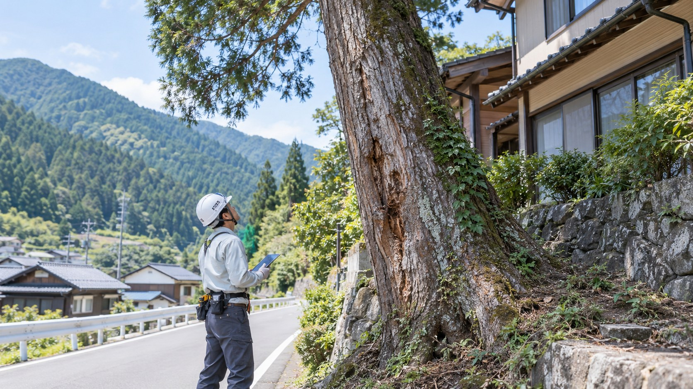
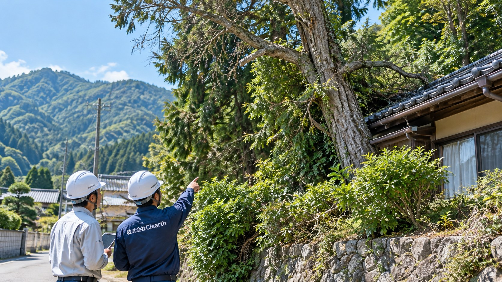

03 HAZARDOUS TREE REMOVAL
OUR BUSINESS / SERVICE 03
危険木伐採
倒木リスクを見極め、
安心につなぐ。
倒れそうな木、家屋や道路に近い木、電線付近の木、山林内の危険木まで、現地の状況に合わせて安全な作業方法を検討します。
ABOUT SERVICE
危険木伐採について
危険木伐採とは、倒木の恐れがある木や、家屋・道路・施設・電線などに影響する可能性のある木を、被害が発生する前に確認し、必要に応じて伐採・処理する作業です。
株式会社Clearthでは、倒れそうな木、傾いた木、枯れ木、山林内の危険木、道路や建物に近い支障木について、現地確認を行ったうえで安全な作業方法を検討します。
重機や林業現場での経験を活かし、伐採だけでなく、伐採後の搬出、処分、一次破砕、木質チップ化まで一貫してご相談いただけます。
木の状態や周辺環境が分かる写真を送っていただければ、事前相談も可能です。

WHY CLEARTH
Clearthの危険木伐採
現地確認から伐採後の資源活用まで、状況に合わせてご相談いただけます。
- 01
現地確認から作業方法の提案まで丁寧に対応
周辺環境や木の状態を確認し、状況に応じた施工方法を検討します。
- 02
家屋・道路・電線付近にも配慮した安全な計画
周囲への影響を確認し、安全性を重視した施工方法を検討します。
- 03
重機・林業の経験を活かした対応
山林内の危険木から、生活圏に近い木まで現場条件に応じて対応します。
- 04
伐採後の搬出・処理・資源活用まで一貫対応
伐採だけで終わらず、搬出・処分・一次破砕・木質チップ化など、次の工程までご相談いただけます。

SAFETY FIRST
危険を見極め、
安全な対応へ。
危険木は、木の状態だけでなく、住宅・道路・電線など周辺環境との距離によって適切な対応方法が異なります。
倒木のおそれ、傾き、枯れ、根元や幹の状態、周辺設備との位置関係などを確認し、安全に配慮した方法で伐採・処理につなげます。
住宅・道路・電線付近など、通常の伐採が難しい場合は、ロープや高所作業車などを使用する特殊伐採にも対応します。
対応内容
- 現地確認
- 倒木リスク確認
- 傾木・枯木の確認
- 家屋・道路周辺対応
- 電線付近の確認
FLOW
ご相談から作業完了まで
写真確認または現地確認後に、作業内容とお見積りをご案内します。
- 01お問い合わせ
- 02現地確認
- 03危険度・周辺環境の確認
- 04作業方法・お見積り
- 05伐採・搬出・処理
FOR YOU / WHO IT HELPS
こんなお悩みはありませんか？
一般住宅、山林所有者、法人企業、行政・施設管理者
- 倒れそうな木が家屋や道路に近い
- 枯れ木や老木があり、強風や大雨の時が心配
- 電線付近や施設周辺の木をどう処理すればよいかわからない
- 山林内の倒木リスクを確認したい
- 危険木を伐採した後の処分までまとめて相談したい
CONTACT
危険木伐採について、まずは状況をお聞かせください。
倒れそうな木、家屋や道路に近い木、電線付近の木、山林内の危険木でお困りの方へ。現地確認から伐採、搬出、処分、木質チップ化まで、状況に合わせて最適な方法をご提案します。まずはお気軽にご相談ください。
木全体・根元の状態、家屋・道路・電線との距離、作業車両が入れる道が分かる写真をメールでお送りいただくと、事前確認がスムーズです。倒木の恐れがある場合や道路・建物へ影響している場合は、お早めにお電話でご相談ください。
対応エリア
広島県全域を中心に対応しております。近隣県についても対応可能な場合がありますので、お気軽にご相談ください。
現地確認・お見積もりは無料です。現場状況やご相談内容を確認したうえで、最適な方法をご提案いたします。